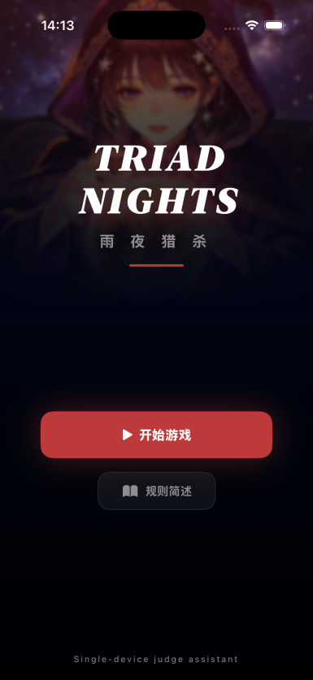
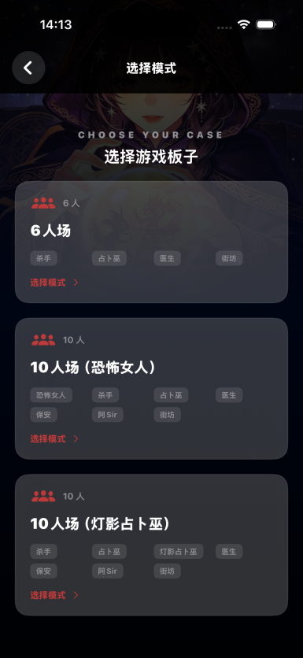
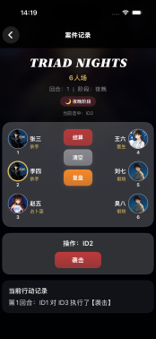
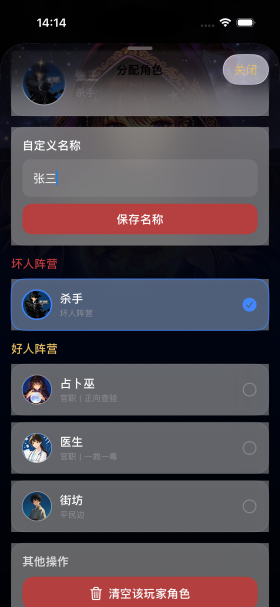
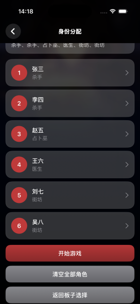
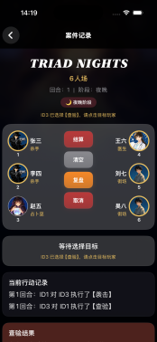
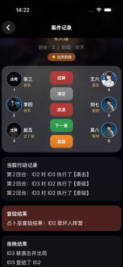
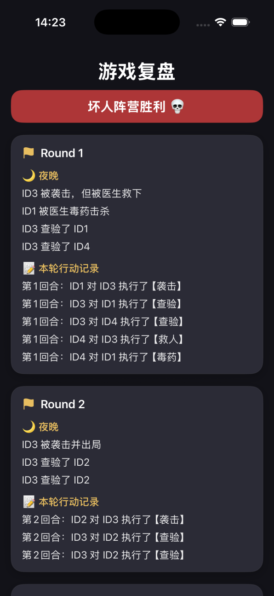
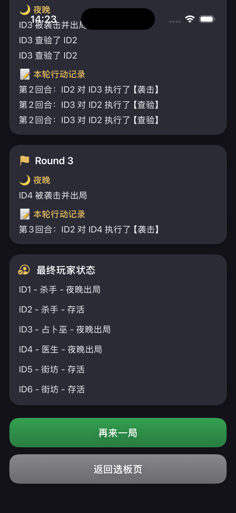

夜晚多条行动线并行推进，全靠法官的记忆与手速，人数一多必然出错。
TriadNights · User Research & Product Design · 2026HKU IDT 7506 · 小组项目，我负责前期调研与产品设计
让法官只管主持游戏。
TriadNights 是一款面向线下社交推理游戏的单设备法官助手。法官在一台手机上记录全部夜间行动，系统按规则自动结算——把整局游戏最容易出错的夜晚，变成最可靠的环节。



夜晚，是整局游戏最脆的环节。
法官要在黑暗里，同时记住每个人的动作和每条规则的顺序。
袭击、救人、守护、查验、魅惑在同一夜并行发生；守护可以挡刀，毒药无视守护，死亡还会触发连锁效果。结算顺序错一步，公平就没了——而人数越多、角色越多，人为错误就越不可避免。
守护、毒药与连锁效果要求严格的执行顺序，肉眼裁决极易出错。
手动发牌与口头确认耗时且易混淆，人数多的场尤其明显。
存活、出局与技能状态缺少统一呈现，法官只能靠纸笔撑完全场。
离线，才是这类软件的分水岭。
先看用户。三类人的需求并不相同，但都指向同一场游戏的不同侧面。
01休闲玩家
要快、要清楚。开局快、流程明白，不用学复杂操作就能玩起来。
02资深玩家
要精确、要复盘。规则执行不能出错，赛后能回看每一步决策。
03法官
要省力、要不出错。负担随游戏复杂度陡增，是最需要被系统支持的角色。
再看竞品。做法官工具的人并不少，五款代表性产品各有取舍。
产品已覆盖没覆盖
网易狼人杀
实时语音、在线匹配，线上体验完整
面向线上，登录与匹配流程长，不适合快速面对面开局
娱乐向推理 App
玩法变体多，社交互动强
缺少结构化的法官支持，管不了严谨的线下局
WolfMafia
离线发身份，扫码分配角色
只解决身份分发，复杂规则仍靠人脑
Werewolf Moderator
引导法官逐步走完流程
以流程引导为主，缺少冲突裁决与复盘
Mafia Without Moderator
探索用一台设备管理整局
未覆盖复杂规则交互，也没有结构化复盘
法官工具不缺人做，缺的是一台永远不需要联网的手机。线下组局的真实环境是：宿舍楼信号拥挤、桌游吧在地下、郊游没有基站——在线产品在这些场景集体失灵。离线带来的不只是「没网也能用」：开局不需要任何人先注册登录，没有弹窗和推送打断推理；身份分配和夜间行动是整局游戏最敏感的信息，全部留在本地设备，不上传任何服务器；也不存在「停服」——三年后翻开还能玩。把「身份分配 — 行动记录 — 规则结算 — 状态可视化 — 复盘」的完整流程装进一台离线设备，这就是 TriadNights 的位置。
为什么不是每人一部手机。
多设备方案看起来「更公平」，但把两边的代价摆在一起，结论很清楚。
Option A · 每人一部手机信息直达，代价是社交本身
- 信息直达每个玩家，无需口头转述
- 依赖网络与账号，开局前先过三道门槛
- 多端同步引入新的故障点，谁掉线谁尴尬
- 玩家低头看屏幕，面对面推理名存实亡
Option B · 法官单设备复杂度收进一台手机
- 零网络、零账号、零配对，坐下就能开局
- 玩家保持面对面，游戏还是「读人」的游戏
- 一台手机就是全部设备成本
- 法官侧信息密度高，交互必须被严格约束
单设备离线不是功能上的妥协，而是产品判断：宿舍和桌游吧的网络不可靠，而社交推理的核心体验恰恰是面对面。唯一的代价是法官侧信息密度变高——这个代价，用交互设计偿还。
从选板子到复盘，一条线走完。
系统跟随游戏的自然节奏组织：配置、身份、夜晚、白天、复盘。法官的每一步操作，都被约束在规则允许的范围之内。
选板子→分身份→夜晚记录→自动结算→白天公示→复盘


夜晚是全流程的核心，也是交互约束最密的地方：规则不是写在说明书里让人记住的，而是直接写进交互，让错误根本无法发生。
医生一局只能救一次，用完按钮直接不可选。不存在「忘了已经用过」。
约束交互保安不能连守同一人，无有效目标时技能禁用。错误在发生之前被拦下。
约束交互袭击、守护、毒药的裁决顺序写进规则引擎。法官确认行动，不裁决行动。
规则引擎

时间轴日志，让复盘有据可查。
每一回合的每一次行动都被结构化存档：谁对谁做了什么、系统如何判定结果。赛后翻开记录，隐藏的夜晚信息全部可见——复盘从「凭记忆吵架」，变成「看记录讲道理」，一次性娱乐变成可持续的学习循环。
RoundRecord→夜晚摘要→行动记录→白天摘要
ActionRecord 记录「行动者 → 目标 → 动作类型 → 回合」。结构化数据让每一局都可以被完整重建，也给未来的行为分析留了口子。


真人玩过之后，才知道瓶颈在哪。
- 全流程可玩性验证
- 三种板子完整开局
- 规则结算正确性检查
- 完整真实局，真实法官上手
- 玩家全程无设备，面对面进行
- 复盘环节在赛后实际使用
- 夜晚操作节奏慢
- 开局准备繁琐
- 都指向交互，而非规则
2个模拟器上永远发现不了的问题：夜晚操作节奏慢、开局准备繁琐——它们都不在规则里，在真实局的压力里
测试发现反推设计：交互约束让夜晚少想一步，板子预设让开局少点十次。
没做的，和没验证的。
- 未做系统化可用性测量（任务时长、错误率）
- 门店侧未做独立调研，需求推断自线下场景观察
- 自定义板子与规则编辑器未开放，规则覆盖以三种预设为界
- 多设备、在线与混合模式未实现
- 无上线发布与 App Store 适配
- 测试样本小，结论是方向性的，不是统计性的
07 · Outcome & next
12种角色 · 3 种官方板子 · 真人实测
从开局配置到赛后复盘的完整闭环
从开局配置到赛后复盘的完整闭环
交付的是完整闭环原型，不是上线产品。
全流程在一台手机上闭环：板子预设、身份分配、行动记录、规则结算、状态可视化、时间轴日志。多设备协同、自定义规则与在线模式，明确不在本次交付范围内。
08 · Reflection
这个项目教我的三件事。
把约束写进交互，而不是说明书
交互约束 UI 的本质，是让错误「不可选」。规则执行从依赖人的自觉，变成依赖系统的结构——这是产品能带来公平的地方。
复盘是另一半游戏
社交推理游戏的乐趣有一半在赛后讨论。把过程数据留下来，一次性娱乐就变成了可持续的学习循环。
单设备是判断，不是妥协
砍掉设备数量，反而保住了产品最核心的体验。功能清单上的「少」，常常是体验上的「多」。